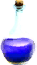
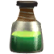
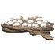

Микстура маны
Предметы / Ресурсы
Открыть в интерактивной вики →
| Цена | 10 |
|---|---|
| Вес | 0 |
Описание
Мана: +50
| Чтобы использовать, нажмите на предмет в окне эликсиров. Предмет нельзя передать другим игрокам. |
Рецепт
Создание: 3x

Яд Шнюка + 1x
Паучьи яйца + 20Где создать

Способы получения
|
Изготовление
Изготавливает Ига в Госпитале за 20 золота после доставки ингредиентов:
|